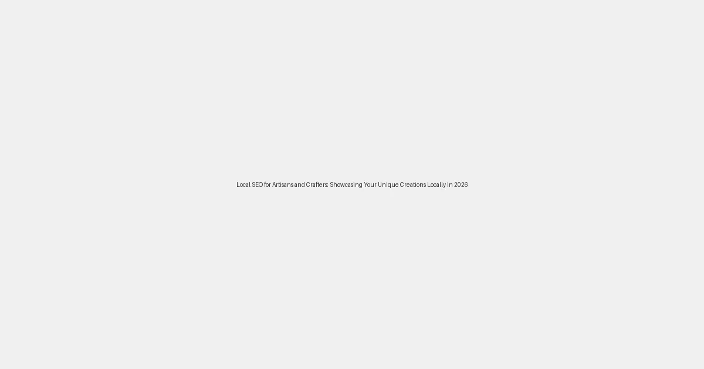

Local SEO for Artisans and Crafters: Showcasing Your Unique Creations Locally in 2026
For artisans and crafters, the beauty lies not just in the creation itself, but in connecting those unique pieces with an appreciative audience. In 2026, the digital marketplace continues to evolve, making local SEO an indispensable tool for showcasing your handmade treasures and attracting customers right in your community. Gone are the days when a stall at a local market was your only storefront; now, your online presence can be just as, if not more, crucial.
Why Local SEO Matters for Artisans and Crafters
Unlike mass-produced goods, handmade items often carry a story, a local connection, and a unique charm that resonates deeply with buyers. Local SEO amplifies this connection, ensuring that when someone nearby searches for "handmade jewelry," "custom pottery," or "local art prints," your creations are front and center. It's about bringing your workshop to the fingertips of your potential customers.
Key Benefits:
- Increased Visibility: Appear in local search results, Google Maps, and "near me" queries.
- Targeted Audience: Attract buyers who specifically seek out local, handmade, and unique items.
- Community Engagement: Build stronger ties within your local community, fostering loyalty and word-of-mouth referrals.
- Direct Sales Opportunities: Drive traffic to your physical studio, local market stall, or directly to your online store for local pickup.
Crafting Your Local SEO Strategy
Here's how artisans and crafters can effectively weave local SEO into their digital marketing tapestry:
- Optimize Your Google Business Profile (GBP): This is your digital storefront. Ensure your profile is 100% complete with accurate business hours, address, phone number, website, and a rich description. Use high-quality photos of your creations and your workspace. Post updates about new products, workshops, or market appearances.
- Local Keyword Research: Think like your customers. What terms would they use? Combine your craft with local modifiers, e.g., "pottery classes [your city]," "handmade soap [your neighborhood]," "custom woodworking [county name]."
-
Create Localized Content:
- Blog Posts: Write about your creative process, the inspiration behind your pieces (especially if it's local), upcoming local craft fairs, or collaborations with other local businesses.
- Product Descriptions: Infuse local flavor. Mention if materials are locally sourced or if a piece is inspired by local landmarks.
- FAQs: Answer questions about local pickup options, custom order processes, or local delivery.
- Build Local Citations: List your business on local directories, craft-specific directories, and community websites. Consistency in your NAP (Name, Address, Phone number) across all listings is crucial.
- Encourage Local Reviews: Positive reviews on your GBP, Etsy, or other platforms boost your credibility. Ask satisfied local customers to leave reviews, mentioning their location if possible.
- Social Media Engagement: Use local hashtags on Instagram and Facebook. Share photos and videos of your creations in local settings. Engage with local community groups.
-
Optimize Your Website:
- Ensure your website is mobile-friendly and loads quickly.
- Include your location prominently on contact pages and footers.
- Implement local schema markup to help search engines understand your business details.
Embrace the Local Connection
Your unique creations have a story, and often, that story is deeply rooted in your local community. By harnessing the power of local SEO, you're not just selling products; you're sharing your passion, building connections, and bringing your artistry to life for those who value it most – your local customers. Start optimizing today, and watch your local presence flourish!